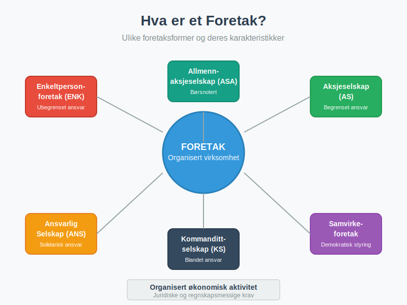
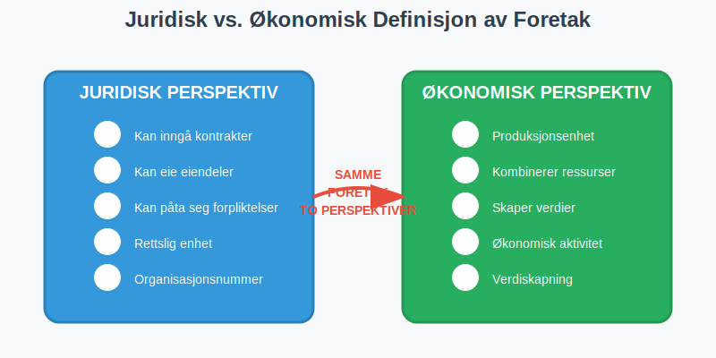
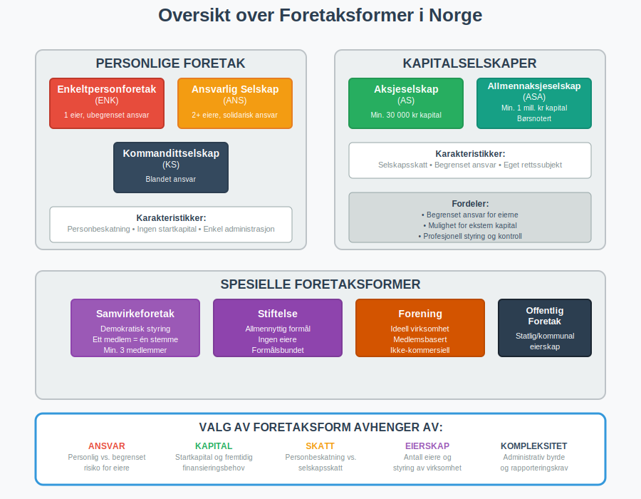
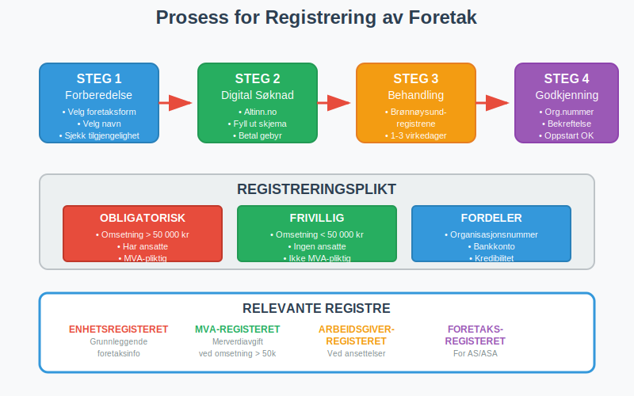
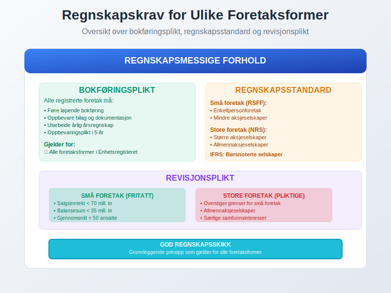
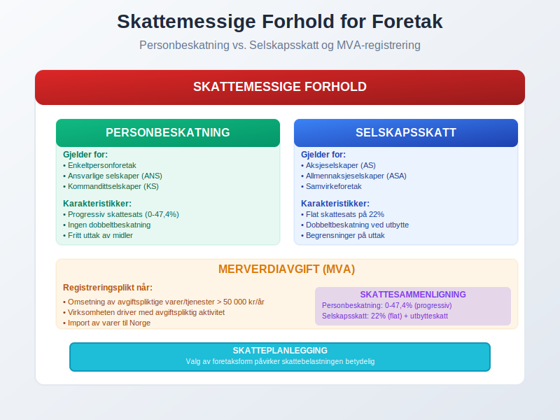
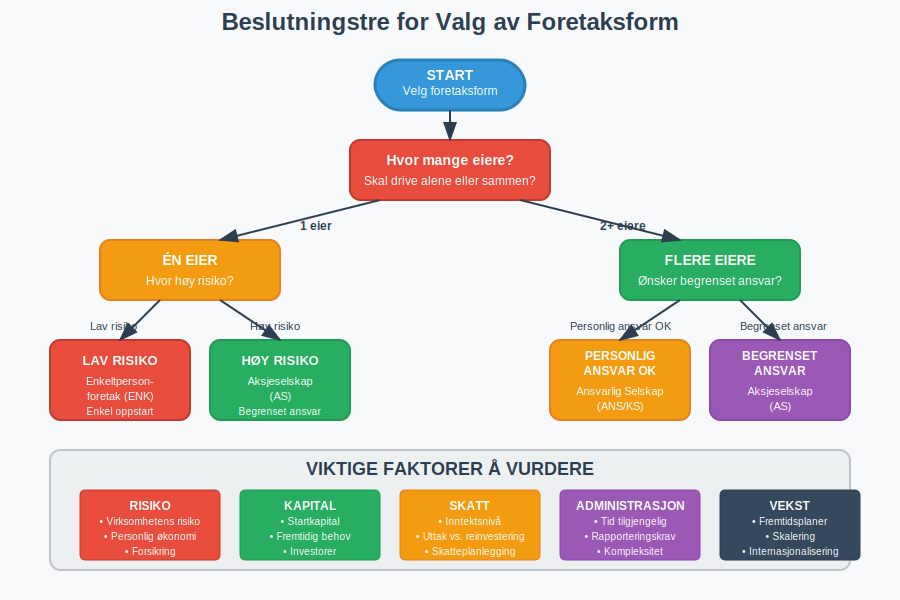
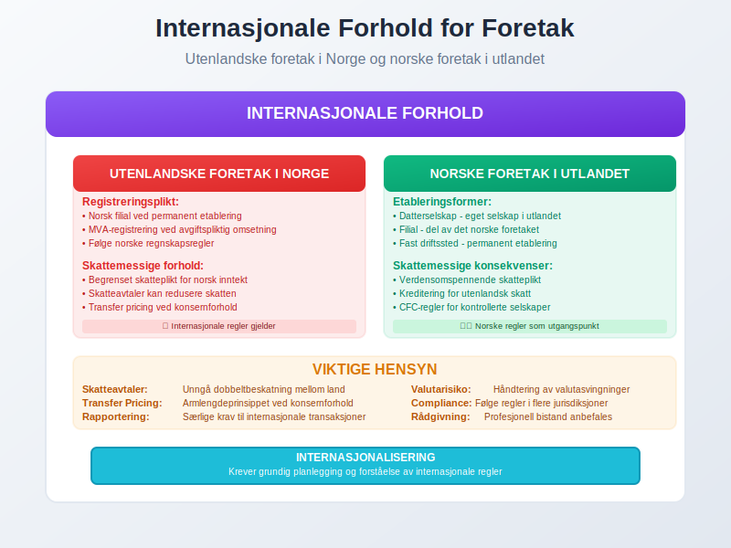

Et foretak er en organisert virksomhet som driver økonomisk aktivitet med sikte på å skape verdier. I Norge finnes det flere ulike foretaksformer, hver med sine særegne juridiske, økonomiske og regnskapsmessige karakteristikker.
For mer om den teoretiske vurderingsmodellen for foretakets økonomi, se Foretaksmodellen.

Definisjon av Foretak
Et foretak defineres som en organisert virksomhet som utøver økonomisk aktivitet. Dette omfatter alle typer virksomheter som:
- Produserer varer eller tjenester
- Selger produkter til kunder
- Utfører tjenester mot betaling
- Driver handel eller annen kommersiell aktivitet
Foretaket kan være privat eid, offentlig eid eller en kombinasjon av begge. Det sentrale er at virksomheten er organisert og driver økonomisk aktivitet på en systematisk måte.
Juridisk vs. Økonomisk Definisjon
Fra et juridisk perspektiv er et foretak en enhet som kan inngå kontrakter, eie eiendeler og påta seg forpliktelser. Fra et økonomisk perspektiv er det en produksjonsenhet som kombinerer ressurser for å skape verdier.

Foretaksformer i Norge
Norge har flere ulike foretaksformer som er tilpasset forskjellige behov og situasjoner. For en detaljert guide til valg av organisasjonsform, se vår omfattende sammenligning av alle selskapsformer.
Personlige Foretak
Enkeltpersonforetak (ENK)
Enkeltpersonforetaket er den enkleste foretaksformen:
- Én eier som driver virksomheten i eget navn
- Ubegrenset personlig ansvar for alle forpliktelser
- Ingen startkapital kreves
- Enkel oppstart og administrasjon
Ansvarlig Selskap (ANS)
Et ansvarlig selskap har flere eiere med solidarisk ansvar:
- To eller flere deltakere som driver virksomhet sammen
- Ubegrenset og solidarisk ansvar for alle deltakere
- Deltakerne hefter for hele selskapets gjeld
- Krever selskapsavtale mellom deltakerne
Kommandittselskap (KS)
Kommandittselskapet kombinerer ulike ansvarsformer:
- Komplementarer med ubegrenset ansvar (driver virksomheten)
- Kommandittister med begrenset ansvar (passive investorer)
- Fleksibel kapitalstruktur
- Ofte brukt for investeringsformål
Kapitalselskaper
Aksjeselskap (AS)
Aksjeselskapet er den mest vanlige selskapsformen for større virksomheter:
- Begrenset ansvar for aksjonærene
- Minimum 30 000 kr i aksjekapital
- Hylleselskap: Ferdigregistrerte aksjeselskap som kan kjøpes for rask oppstart; se vår artikkel om Hylleselskap.
- Eget rettssubjekt som juridisk person med styre og generalforsamling
- Mulighet for å hente ekstern kapital
Allmennaksjeselskap (ASA)
For store selskaper med behov for børsnotering:
- Minimum 1 million kr i aksjekapital
- Strengere krav til rapportering og styring
- Kan noteres på børs
- Høyere grad av offentlighet
Spesielle Foretaksformer
Samvirkeforetak
Samvirkeforetak er basert på samvirkeprinsippet hvor medlemmene eier og kontrollerer virksomheten:
- Demokratisk styring - ett medlem, én stemme
- Åpen medlemskap for alle som oppfyller kriteriene
- Overskudd fordeles etter medlemmenes deltakelse
- Vanlig innen landbruk, handel og tjenester
Stiftelse
For virksomheter med ideelle eller allmennyttige formål:
- Ingen eiere - styres av et styre
- Formålsbundet - må følge stiftelsens vedtekter
- Kan ikke deles ut til private
- Ofte skattefritak for allmennyttige formål

Sammenligning av Foretaksformer
| Foretaksform | Ansvar | Startkapital | Eiere | Beskatning |
|---|---|---|---|---|
| Enkeltpersonforetak | Ubegrenset | Ingen | 1 | Personinntekt |
| Ansvarlig Selskap | Ubegrenset/Solidarisk | Ingen | 2+ | Personinntekt |
| Kommandittselskap | Blandet | Ingen | 2+ | Blandet |
| Aksjeselskap | Begrenset | 30 000 kr | 1+ | Selskapsskatt |
| Allmennaksjeselskap | Begrenset | 1 000 000 kr | 1+ | Selskapsskatt |
| Samvirkeforetak | Begrenset | Varierer | 3+ | Selskapsskatt |
Juridiske Krav og Registrering
Registreringsplikt
Alle foretak må registreres i Enhetsregisteret hos Brønnøysundregistrene når:
- Årlig omsetning overstiger 50 000 kr
- Virksomheten har ansatte
- Virksomheten er merverdiavgiftspliktig
Registreringsprosess
- Søknad sendes digitalt til Brønnøysundregistrene
- Organisasjonsnummer tildeles ved godkjenning
- Registrering i relevante registre (MVA, arbeidsgiver, etc.)
- Oppstart av virksomheten kan begynne
Foretaksnavn
Valg av foretaksnavn må følge bestemte regler:
- Unikt navn som ikke forveksles med eksisterende
- Beskyttede betegnelser som “AS”, “ANS”, “KS” kun for relevante selskapsformer
- Ikke villedende om virksomhetens art eller størrelse
- Ikke krenkende eller upassende innhold

Regnskapsmessige Forhold
Bokføringsplikt
Alle foretak som er registrert i Enhetsregisteret har bokføringsplikt etter bokføringsloven:
Grunnleggende Krav
- Løpende bokføring av alle forretningstransaksjoner
- Oppbevaring av bilag og dokumentasjon
- Årlig årsregnskap med resultatregnskap og balanse
- Oppbevaringsplikt i minimum 5 år
Regnskapsstandard
Foretakene må følge:
- God regnskapsskikk som grunnleggende prinsipp
- Regnskapsstandard for små foretak (RSFF) for mindre virksomheter (se Små Foretak)
- Norsk regnskapsstandard (NRS) for større foretak
- IFRS for børsnoterte selskaper
Løsninger for Regnskapsoppgaver
For mange foretak, spesielt mindre virksomheter, kan det være utfordrende å håndtere alle regnskapsmessige forpliktelser internt. Utkontraktering av regnskapsoppgaver til eksterne leverandører kan være en praktisk og kostnadseffektiv løsning som sikrer:
- Profesjonell håndtering av bokføring og regnskapsføring
- Overholdelse av alle juridiske krav og frister
- Tilgang til spesialisert kompetanse uten behov for egne ansatte
- Kostnadsbesparelser sammenlignet med intern regnskapsavdeling
- Fokus på kjernevirksomhet mens regnskapet håndteres profesjonelt
Dette er særlig relevant for enkeltpersonforetak og mindre aksjeselskaper som ønsker å sikre korrekt regnskapsføring uten å investere i egen regnskapskompetanse.
Revisjonsplikt
Revisjonsplikt avhenger av foretakets størrelse:
Små Foretak (Fritatt for Revisjon)
- Salgsinntekt under 70 millioner kr
- Balansesum under 35 millioner kr
- Gjennomsnittlig under 50 ansatte
Store Foretak (Revisjonspliktige)
- Overstiger grensene for små foretak
- Allmennaksjeselskaper
- Foretak med særlige samfunnsinteresser

Skattemessige Forhold
Personbeskatning vs. Selskapsskatt
Personbeskatning
Gjelder for:
- Enkeltpersonforetak
- Ansvarlige selskaper
- Kommandittselskaper (for komplementarer)
Karakteristikker:
- Overskudd beskattes som personinntekt
- Progressiv skattesats (0-47,4%)
- Ingen dobbeltbeskatning
- Eieren kan ta ut midler fritt
Selskapsskatt
Gjelder for:
- Aksjeselskaper
- Allmennaksjeselskaper
- Samvirkeforetak
Karakteristikker:
- Flat skattesats på 22%
- Dobbeltbeskatning ved utbytte
- Mulighet for skatteplanlegging
- Begrensninger på uttak
MVA-registrering
Foretak må registreres for merverdiavgift (MVA) når:
- Omsetning av avgiftspliktige varer/tjenester overstiger 50 000 kr per år
- Virksomheten driver med avgiftspliktig aktivitet
- Import av varer til Norge
For detaljert informasjon om MVA-plikt og registreringskrav, se vår omfattende guide.

Valg av Foretaksform
Faktorer å Vurdere
Ansvar og Risiko
- Personlig økonomi - hvor mye kan du risikere?
- Virksomhetens risiko - hvor stor er sannsynligheten for tap?
- Forsikringsmuligheter - kan risiko reduseres på andre måter?
Kapitalbehovet
- Startkapital - hvor mye kapital trengs ved oppstart?
- Fremtidig kapitalbehov - vil virksomheten trenge ekstern finansiering?
- Investormuligheter - ønsker du å ta inn eksterne investorer?
Skattemessige Forhold
- Forventet inntektsnivå - hvor høyt vil overskuddet være?
- Uttak vs. reinvestering - skal overskudd tas ut eller reinvesteres?
- Skatteplanlegging - er det behov for avansert skatteplanlegging?
- Særskatteordninger - for virksomheter innen naturressurser kan grunnrenteskatt være aktuelt
Administrasjon og Kompleksitet
- Administrativ byrde - hvor mye tid kan brukes på administrasjon?
- Rapporteringskrav - hvilke rapporter må leveres?
- Styring og kontroll - ønskes enkel eller mer formell styring?
Anbefalinger per Situasjon
For Enkle Virksomheter
Enkeltpersonforetak anbefales når:
- Lav risiko og begrenset kapitalbehov
- Ønsker enkel administrasjon
- Forventer moderat inntektsnivå
- Driver alene uten behov for partnere
For Vekstvirksomheter
Aksjeselskap anbefales når:
- Behov for ekstern kapital
- Høy risiko som krever begrenset ansvar
- Flere eiere eller fremtidige investorer
- Forventet høyt overskudd
For virksomheter som eier eller planlegger å eie flere selskaper, kan et holdingselskap være aktuelt for å oppnå skattefordeler og bedre risikostyring.
For Samarbeidsprosjekter
Ansvarlig selskap eller kommandittselskap når:
- Flere personer skal samarbeide
- Ulik grad av ansvar og deltakelse
- Fleksibel organisering ønskes
- Personbeskatning foretrekkes

Endring av Foretaksform
Når Bør Man Vurdere Endring?
Vekst og Utvikling
- Økt omsetning som gjør aksjeselskap mer skatteeffektivt
- Behov for kapital som krever eksterne investorer
- Økt risiko som gjør begrenset ansvar nødvendig
Endrede Omstendigheter
- Nye partnere som ønsker å bli medeiere
- Internasjonalisering som krever selskapsform
- Børsnotering som krever allmennaksjeselskap
Prosess for Omorganisering
Fra Enkeltpersonforetak til AS
- Stiftelse av nytt aksjeselskap
- Overdragelse av eiendeler og forpliktelser
- Skattemessig behandling av overdragelsen
- Avvikling av enkeltpersonforetaket
Skattemessige Konsekvenser
- Realisasjon av eiendeler kan utløse skatt
- Kontinuitetsregler kan gi skattefrihet
- Profesjonell rådgivning anbefales sterkt
Internasjonale Forhold
Utenlandske Foretak i Norge
Registreringsplikt
Utenlandske foretak som driver virksomhet i Norge må:
- Registrere norsk filial hvis permanent etablering
- Registrere som NUF som alternativ til filial
- Registrere for MVA hvis avgiftspliktig omsetning
- Følge norske regnskapsregler for norsk virksomhet
Skattemessige Forhold
- Begrenset skatteplikt for inntekt fra Norge
- Skatteavtaler kan redusere skatten
- Transfer pricing regler ved konsernforhold
Norske Foretak i Utlandet
Etableringsformer
- Datterselskap - eget selskap i utlandet
- Filial - del av det norske foretaket
- Fast driftssted - permanent etablering
Skattemessige Konsekvenser
- Verdensomspennende skatteplikt for norske selskaper
- Kreditering for utenlandsk skatt
- CFC-regler for kontrollerte utenlandske selskaper

Fremtidige Utviklingstrekk
Digitalisering
Automatisering av Prosesser
- Digital registrering og rapportering
- Automatisk bokføring med AI-støtte
- Sanntids rapportering til myndigheter
Nye Teknologier
- Blockchain for transparent eierskap
- Smart contracts for automatiske transaksjoner
- Digital identitet for sikker autentisering
Regulatoriske Endringer
Bærekraftsrapportering
- ESG-krav for større foretak
- Klimarapportering blir obligatorisk
- Samfunnsansvar får økt fokus
Europeisk Harmonisering
- Felles regnskapsregler i EU/EØS
- Digital single market påvirker regelverket
- Grenseoverskridende mobilitet for selskaper
Konklusjon
Valg av foretaksform er en av de viktigste beslutningene for enhver som skal starte virksomhet. Beslutningen påvirker:
- Juridisk ansvar og personlig risiko
- Skattemessige forhold og økonomisk resultat
- Muligheter for vekst og kapitaltilgang
- Administrativ byrde og kompleksitet
Det er viktig å vurdere både nåværende situasjon og fremtidige planer når foretaksform velges. Mange virksomheter starter som enkeltpersonforetak og endrer senere til aksjeselskap etter hvert som virksomheten vokser.
Profesjonell rådgivning fra regnskapsfører, advokat eller revisor anbefales for å sikre at valget er optimalt for den konkrete situasjonen. God planlegging i startfasen kan spare mye tid, penger og komplikasjoner senere.
Uansett hvilken foretaksform som velges, er det viktig å følge gjeldende lover og regler for regnskap, bokføring og rapportering for å sikre en vellykket og lovlig drift av virksomheten.